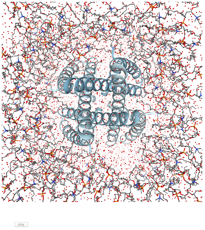

Trajectory Viewer¶
Trajectory viewer in Jupyter notebook with nglview
Try me¶
Note
Source: Above pdb file was converted from dcd and psf files from http://www.ks.uiuc.edu/Training/Tutorials/ (Membrane Proteins Tutorial section)
How does the notebook look like?¶

Note
Still work in progress. Please see source code in https://github.com/arose/nglview/